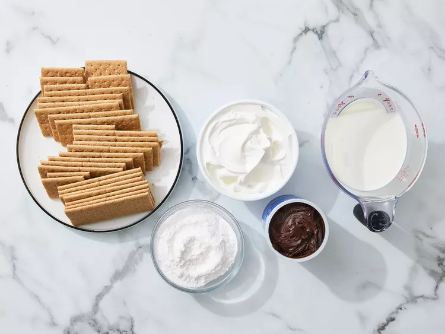
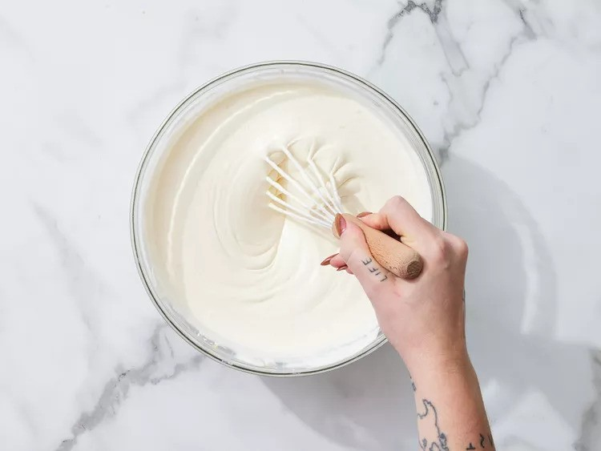
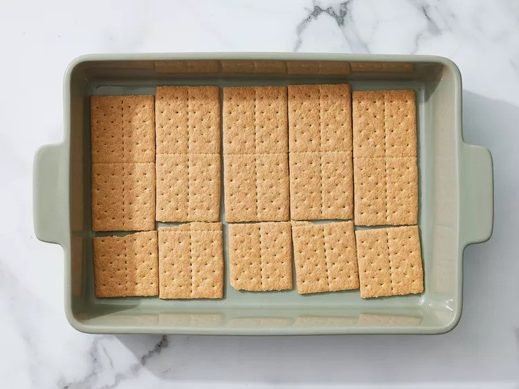
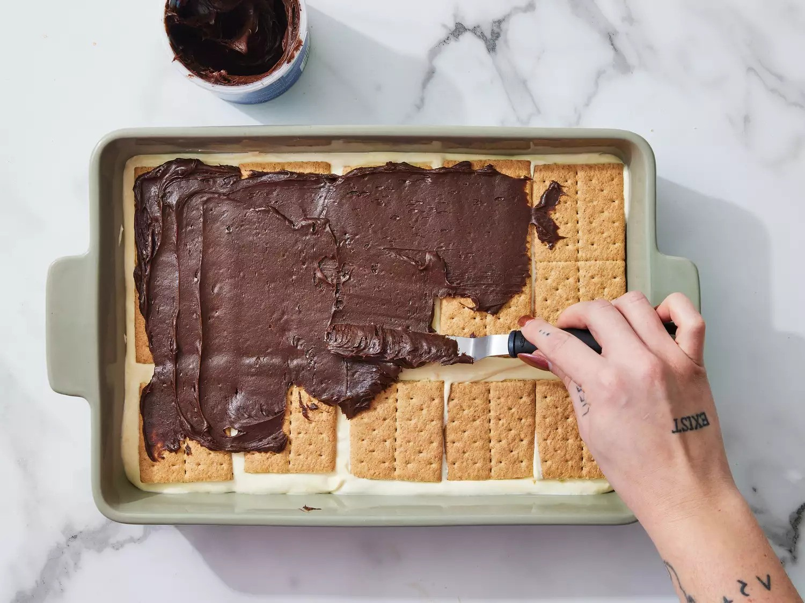

This éclair cake is a very quick and simple no-bake dessert. It uses graham crackers and a pudding mixture.
It tastes just like an éclair, but there is enough for a crowd! It is a great recipe for children who are learning
to cook since there is no baking involved or any power kitchen tools.Just a bowl and a spoon!
Gather all ingredients.
Stir milk, whipped topping, and pudding mix together in a medium bowl until well combined.
Arrange a single layer of graham cracker squares in the bottom of a 9x13-inch baking pan.
Evenly spread half of the pudding mixture over the crackers; top with another layer of crackers and the remaining pudding mixture.
Top with a final layer of graham crackers. Cover and refrigerate for 30 minutes.
Spread frosting over the chilled cake up to the edges of the pan. Cover again and chill for at least 3 1/2 hours before serving.
Enjoy!